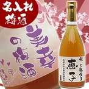

名入れ 梅酒 ボトル720ml 還暦祝い 結婚祝い 誕生日プレゼント 彼女 お母さんへプレゼント 梅酒 名入れ
【世界にたった一つのオリジナル梅酒!!】 あすつく対応1日〜3日でお届けできます！配送日指定も可能です！ 様々な用途でご利用いただいております。 還暦祝い 古希祝い 喜寿祝い 出産祝い 内祝い 誕生日プレゼント 結婚祝い 退職祝い 父の日 母の日 お中元 敬老の日 クリスマス 長寿 新築祝い入学 就職 卒業 引っ越し 企業・店舗用・表彰品・記念品・ノベルティ 梅酒について 容量 720ml アルコール度数 12度 オススメの飲み方 ストレートかオンザロックがお勧めです。 製造元 株式会社 恒松酒造本店 ご購入について 酒類販売免許 神奈法8048 未成年者飲酒禁止法に基づき、20歳以上の年齢であることを確認できない場合には酒類を販売致しません。